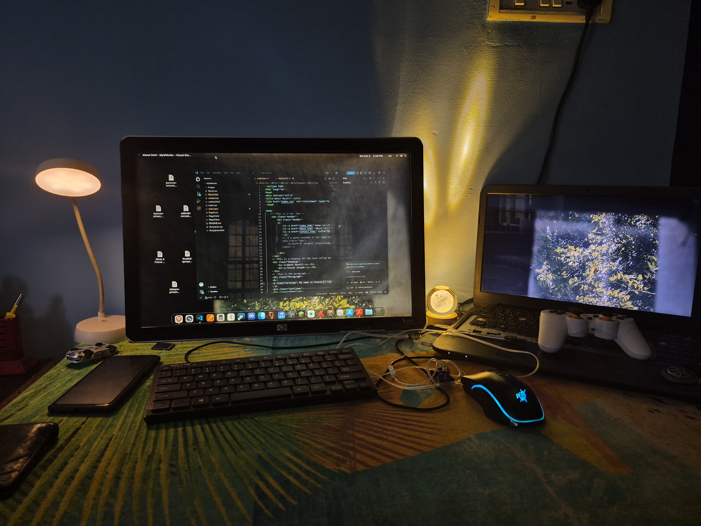

This website was unmaintained for almost a year. Now that I'm back to it, So many things have changed. I have a secondary laptop which is newer than the main one. It has a 11th gen i3, 8gb of ram and 256gb ssd. It also has a touchscreen which is a good thing. But the display is made of glass which is really glossy that it attracts all the fingerprints.It also has windows, which in my opinion, is very slow. That's why I'm still using my linux machine as my main. Speeaking of the linux machine, I installed arch with gnome on it and it feels really snappy that i feel like it's faster than the windows laptop. I repositioned my desk to another corner and I bought a new phone. I'm now living in peace.
Oct 3 2026

-----------------------